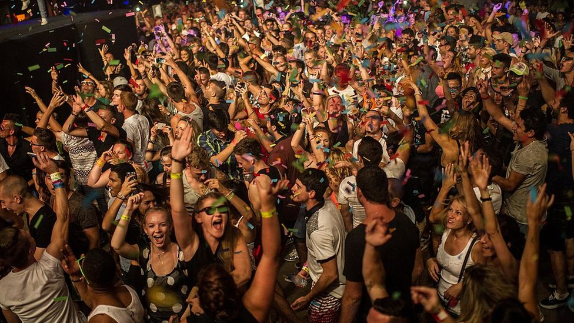
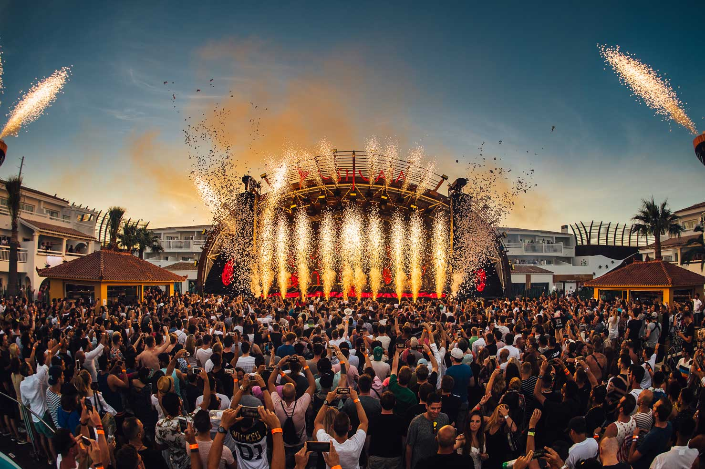
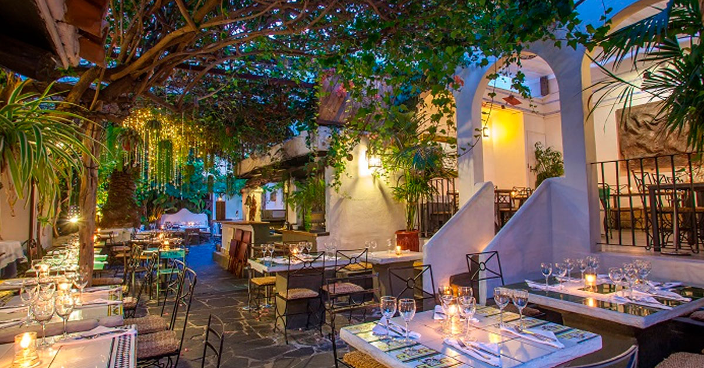

Descobreix les festes més exclusives, els millors DJs i els locals més icònics d’Ibiza.
Explora els clubs més famosos del món com Pacha, Amnesia o Ushuaïa.

Viu festivals únics amb DJs internacionals i ambient espectacular.

Gaudeix de gastronomia mediterrània en llocs exclusius davant del mar.

Turistes cada any
Discoteques i beach clubs
Festes cada setmana
DJs internacionals
Un dels DJs més famosos del món i resident habitual a Ushuaïa.
Especialista en EDM i festivals multitudinaris.
Referent mundial del house i música electrònica moderna.
Icona internacional de la música electrònica comercial.